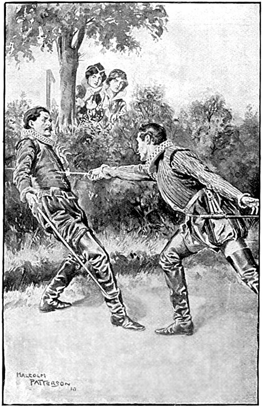

В наше время никакие сборища людей, как бы нарядны они ни были, не могут дать представления об описываемом зрелище. Мягкие, роскошные и яркие одежды, завещанные пышной модой Франциска I следующему поколению, еще не превратились в узкие темные платья, которые позднее вошли в моду при Генрихе III; наряд самого Карла IX, не такой пышный, но, пожалуй, более изящный, чем носили в предыдущую эпоху, выделялся своим художественным совершенством. Наша действительность не дает ничего, что можно было бы сравнить с такой процессией: все великолепие современных нам парадов сводится к симметрии и мундиру.
Пажи, стремянные, дворяне второго ранга, собаки и запасные лошади, следовавшие с боков и сзади, придавали королевскому поезду вид настоящей армии. В хвосте этой армии шел народ. Вернее, народ был всюду: он шел сзади, впереди, с боков, крича одновременно и «да здравствует!» и «бей!», поскольку в шествии участвовали также гугеноты, перешедшие недавно в католичество, но, несмотря на это, народ был все же зол на них.
Утром, в присутствии Екатерины и герцога Гиза, Карл IX заговорил с Генрихом Наваррским, как о самом обыкновенном деле, о том, чтобы поехать посмотреть на виселицу Монфокона, иными словами – на изуродованный труп адмирала, который там висел. Первой мыслью Генриха Наваррского было уклониться от участия в поездке. Этого и ждала Екатерина. При первых же его словах, выражавших чувство брезгливости, она обменялась с герцогом Гизом взглядом и усмешкой. Генрих Наваррский заметил то и другое, понял, что это значило, и, сразу взяв себя в руки, сказал:
– А в самом деле, почему бы мне и не поехать? Я католик, и у меня есть обязательства по отношению к новому вероисповеданию. – Затем, обращаясь к Карлу IX, добавил: – Ваше величество, можете положиться на меня: я буду всегда счастлив сопровождать вас, куда бы вы ни ехали!
И быстро окинул взором всех, интересуясь, чьи брови нахмурились от этих слов.
Во всем блестящем королевском поезде этот сын-сирота, этот король без королевства, этот гугенот-католик, пожалуй, больше всех приковывал к себе любопытные взгляды толпы. Его характерное удлиненное лицо, немного простонародные манеры, приятельское отношение к низшим, доходившее до степени, не совместимой с королевским саном, но усвоенное с детства среди беарнских горцев и сохраненное до самой его смерти, – все это выделяло Генриха в глазах толпы, откуда раздавались голоса:
– Ходи к обедне, Анрио! Ходи почаще!
На это Генрих Наваррский отвечал:
– Был вчера, был сегодня и буду завтра. Святая пятница! Кажется, довольно?!
Маргарита ехала верхом – красивая, цветущая, изящная; все дружным хором восхищались ею, но надобно сказать, что слышалось немало похвал и по адресу ее подруги, герцогини Невэрской, подъехавшей на белой лошади, которая возбужденно потряхивала головой, точно гордясь своею ношей.
– Что нового, герцогиня? – спросила королева Наваррская.
– Насколько мне известно, мадам, ничего, – ответила герцогиня Невэрская громко. Затем тихо спросила: – А что сталось с гугенотом?
– Я нашла ему почти надежное убежище, – ответила Маргарита. – А что ты сделала с твоим великим человекоубийцей?
– Он захотел участвовать в этом торжестве и едет на боевой лошади герцога Невэрского, огромной, как слон. Страшный всадник! Я разрешила ему присутствовать на этой церемонии, надеясь, что твой гугенот из осторожности будет сидеть дома, а следовательно, нечего бояться, что они встретятся.
– О, если бы он и был здесь, – ответила Маргарита, – а его, кстати, нет, то думаю, что и тогда бы не произошло стычки. Мой гугенот – только красивый юноша, и больше ничего; он голубь, а не коршун: воркует, а не клюется. Судя по всему, – сказала она непередаваемым тоном, слегка пожав плечами, – это мы думали, что он гугенот, а на самом деле он буддист, и его религия запрещает проливать кровь.
– Куда же девался герцог Алансонский? – спросила Анриетта. – Я его не вижу.
– Он нас догонит: сегодня утром у него болели глаза, и он хотел остаться дома; ведь Франсуа, стараясь не быть одних взглядов со своим братом Карлом и братом Генрихом, очень благосклонен к гугенотам, а так как это всем известно, то ему дали понять, что король истолкует его отсутствие в дурную сторону, – тогда он решил ехать. Да вот, смотри – вон там, куда все смотрят, где кричат: это он проезжает в Монмартрские ворота.
– Верно, это он, я вижу! – сказала Анриетта. – Ей-богу, сегодня он очень недурен собой. С некоторого времени герцог Франсуа усиленно занимается своей особой – наверняка влюбился. Видишь, как хорошо быть королевским принцем: он скачет прямо на народ, и все расступаются.
– Он и на самом деле всех нас передавит, – смеясь, сказала Маргарита. – Боже, прости мне мои прегрешения! Герцогиня, велите вашим дворянам посторониться, а то вон там один – если не посторонится, так его раздавят.
– О, это мой бесстрашный! – воскликнула герцогиня. – Смотри, смотри!..
Коконнас действительно выехал из своего ряда, направляясь к герцогине Невэрской; но в то самое мгновение, как он пересекал внешний бульвар, отделявший улицу от предместья Сен-Дени, какой-то всадник из свиты герцога Алансонского, тщетно сдерживая свою занесшуюся лошадь, налетел прямо на пьемонтца. Коконнас покачнулся на своем богатырском скакуне, чуть не потерял шляпу, успел подхватить ее и обернулся, пылая яростью.
– Боже мой! Это месье де Ла Моль! – сказала Маргарита на ухо своей приятельнице.
– Вон тот бледный красивый молодой человек?! – воскликнула герцогиня, не будучи в силах сдержать свое первое впечатление.
– Да, да! Тот самый, что чуть не перевернул твоего пьемонтца.
– О-о! Это может кончиться ужасно! – сказала герцогиня. – Они смотрят друг на друга!.. Узнали!
Действительно, Коконнас обернулся, узнал Ла Моля и даже упустил повод от удивления, будучи уверен, что он убил своего бывшего приятеля или по крайней мере надолго вывел его из строя. Ла Моль тоже узнал пьемонтца и вдруг почувствовал, как вспыхнуло его лицо. В течение нескольких секунд, достаточных для выражения всех затаенных чувств их обоих, они впивались друг в друга таким взглядом, что привели в трепет обеих дам. После этого Ла Моль, осмотрев все кругом и, видимо, сообразив, что здесь не место для взаимных объяснений, пришпорил лошадь и догнал герцога Алансонского. Коконнас постоял с минуту на том же месте, закручивая ус все выше, пока кончик уса не ткнулся ему в глаз; наконец он решил двинуться за всеми, так как Ла Моль, не говоря ни слова, поехал прочь.
– Да, да! – произнесла Маргарита с горечью разочарования. – Я не ошиблась… Но это уж слишком.
И она до крови прикусила губы.
– Он очень красив, – ответила герцогиня тоном утешения.
Как раз в эту минуту герцог Алансонский занял место позади короля и королевы-матери, и, таким образом, дворяне герцога, следуя за ним, должны были проехать мимо Маргариты и герцогини Невэрской. Поравнявшись с ними, Ла Моль снял шляпу, поклонился до самой шеи своей лошади и, не надевая шляпы, ждал, что ее величество удостоит его взглядом.
Но Маргарита гордо отвернулась.
Ла Моль заметил на лице королевы презрительное выражение и стал из бледного зеленым. Больше того, он вынужден был ухватиться за гриву лошади, чтобы не упасть на землю.
– Ой, ой! Жестокая женщина! – сказала герцогиня королеве. – Посмотри же на него, а то он упадет в обморок.
– Только этого еще недоставало, – ответила королева с уничтожающей усмешкой. – Нет ли у тебя нюхательной соли?
Герцогиня Невэрская ошиблась. Ла Моль хотя и покачнулся, но справился с собой и, укрепившись в седле, поехал занять свое место в свите герцога Алансонского.
В это время королевский поезд двигался вперед; вдали стал вырисовываться зловещий силуэт виселицы, поставленной и обновленной Энгерандом де Мариньи. Никогда еще не была она увешана так густо, как в этот день.
Пристава и гвардейцы прошли вперед и стали широким кругом вокруг ограды. При их приближении вороны, сидевшие на виселице, поднялись, огорченно каркая, и улетели.
В обычные дни монфоконская виселица служила прибежищем для собак, привлекаемых частою добычей, и для грабителей-философов, заходивших сюда размышлять о грустной стороне их ремесла.
В этот день собаки и грабители отсутствовали – по крайней мере их не было видно. Первых вместе с воронами разогнали пристава и гвардейцы, вторые сами смешались с толпой, чтобы применить ловкость своих рук, от которой зависит веселая сторона их ремесла.
Поезд приближался к виселице; первыми подъехали к ней Карл IX и Екатерина, за ними герцог Анжуйский, герцог Алансонский, король Наваррский, герцог Гиз и их дворяне; дальше – королева Маргарита, герцогиня Невэрская и все дамы, составлявшие, как говорили, летучий эскадрон королевы-матери; еще дальше – пажи, стремянные, лакеи и народ: всего тысяч десять человек.
На главной виселице висела какая-то бесформенная масса, обезображенный труп, почерневший, покрытый запекшейся кровью и слоем свежей беловатой пыли. У трупа отсутствовала голова, поэтому он был повешен за ноги. Но всегда изобретательный народ заменил голову пучком соломы и поверх него надел человеческую маску, а какой-то насмешник, знавший привычки адмирала, всунул в рот ей зубочистку.
Вся эта процессия из разряженных вельмож и прекрасных дам, двигавшаяся мимо почерневших трупов и длинных грубых перекладин виселицы, представляла собой жуткое, причудливое зрелище, напоминавшее картину Гойи. И чем шумнее выражалась радость посетителей, тем резче противоречила она мрачному безмолвию и мертвой бесчувственности трупов, которые служили предметом для насмешек, приводивших в дрожь самих насмешников.
Многим было тяжело смотреть на эту страшную картину, и в группе обращенных гугенотов выделялся своею бледностью Генрих Наваррский: как ни умел он владеть собой, какой бы способностью скрывать свои чувства ни наградило его небо, он все же не мог выдержать. Пользуясь тем обстоятельством, что от этих человеческих останков шел невыносимый смрад, Генрих подъехал к Карлу IX, остановившемуся вместе с Екатериной перед трупом адмирала.
– Сир, – сказал он, – не находит ли ваше величество, что этот жалкий труп пахнет очень скверно и что не стоит здесь оставаться дольше?
– Ты так думаешь, Анрио? – сказал Карл IX, глаза которого горели жестокой радостью.
– Да, сир.
– А я держусь другого мнения: труп врага всегда пахнет хорошо!
– Сир, – вмешался в разговор Таван, – если вы знали, что мы поедем навестить адмирала, то вашему величеству следовало пригласить Ронсара, вашего учителя поэзии: он тут же составил бы эпитафию старику Гаспару.
– Можно обойтись и без него, – ответил Карл IX, – составим ее сами… – И, подумав одну минуту, сказал: – Ну, например, послушайте вот это:
Вот адмирал, – когда б вы были строги,
То чести бы ему не оказали вы, —
Он опочил, повешенный за ноги,
За неименьем головы.
– Браво, браво! – закричали дворяне-католики, тогда как обращенные гугеноты молчали, нахмурив брови.
Генрих в это время болтал с Маргаритой и герцогиней Невэрской, делая вид, что не слышал королевского экспромта.
– Едем, едем, сын мой! – сказала Екатерина, начиная чувствовать себя нехорошо от этого зловония, заглушавшего все ароматы духов, которыми она была опрыскана. – Едем. «Нет такой хорошей компании, которая бы не расходилась». Простимся с адмиралом и едем в Париж.
Она иронически кивнула головой адмиралу – так, как прощаются с хорошим другом, – заняла место в голове колонны и выехала на прежнюю дорогу, а за нею последовала вся процессия, двигаясь мимо трупа Колиньи.
Солнце уже спускалось к горизонту. Толпа хлынула вслед за их величествами, наслаждаясь великолепием королевской процессии во всех ее подробностях; вместе с толпой ушли и жулики; таким образом, минут через десять после отъезда короля уже не оставалось никого близ изуродованного трупа адмирала, овеваемого лишь набежавшим вечерним ветерком.
Говоря «никого», мы ошибались. Какой-то дворянин на вороной лошади, очевидно, не успевший из-за присутствия высоких особ хорошенько рассмотреть бесформенный и почернелый человеческий обрубок, остался позади и с удовольствием разглядывал цепи, крюки, каменные столбы – словом, виселицу со всеми ее приспособлениями, которые ему, приехавшему в Париж лишь несколько дней тому назад и не знавшему усовершенствований, свойственных столицам, казались, несомненно, верхом самого ужасного безобразия, какое только может придумать человек.
Читатель, конечно, догадался, что этот дворянин был Коконнас. Изощренный глаз одной из дам напрасно искал его в процессии и, пробегая по ее рядам, не находил.
Но Коконнаса разыскивала не только дама. Другой дворянин, заметный по своему белому колету и изящному перу на шляпе, посмотрев вперед, затем по сторонам, вздумал посмотреть назад, где сразу увидел высокую фигуру Коконнаса и богатырский силуэт его коня, резко выступавшие на фоне неба, окрашенного последними лучами солнца в багряный цвет.
Тогда дворянин в колете из белого атласа свернул с дороги, по которой двигалась процессия, и, сделав круг по маленькой тропинке, вернулся к виселице.
Почти сейчас же дама, в которой мы узнаем герцогиню Невэрскую, как мы признали Коконнаса в высоком дворянине на вороном коне, подъехала к Маргарите.
– Маргарита, мы ошибались обе, – сказала она. – Пьемонтец остался позади, а Ла Моль поехал за ним следом.
– Дьявольщина! – смеясь, ответила Маргарита. – Из этого что-нибудь да выйдет. Признаюсь, я бы не без удовольствия отказалась от своего мнения о нем.
Маргарита обернулась и увидела Ла Моля в то время, как он производил вышеописанный маневр.
Тут же обе принцессы решили оставить королевскую процессию, благо им представлялся удобный случай: в это время процессия делала поворот, минуя проезжую дорожку, обсаженную широкой живой изгородью, причем дорожка заворачивала в обратную сторону и проходила в тридцати шагах от виселицы. Герцогиня Невэрская шепнула что-то на ухо командиру своей охраны, Маргарита сделала знак Жийоне, и все четверо, проехав некоторое расстояние по этой проселочной дороге, спрятались за кустами изгороди, ближайшими к тому месту, где должно было произойти событие, видимо, возбуждавшее в дамах сильное желание быть его зрительницами. Как мы сказали, их отделяло шагов тридцать от того места, где восхищенный Коконнас самозабвенно жестикулировал перед трупом адмирала.
Маргарита сошла с лошади, за ней герцогиня Невэрская и Жийона; командир тоже спешился и взял в руки поводья от четырех лошадей. Густая зеленая трава служила для трех женщин троном, которого так часто и безуспешно добиваются принцессы. Просвет в изгороди позволял им видеть все.
Ла Моль уже закончил свой кружной путь, подъехал к Коконнасу сзади и, протянув руку, хлопнул его по плечу. Пьемонтец обернулся.
– О-о! Так это не сон?! – воскликнул Коконнас. – Вы все еще живы?
– Да, месье, я еще жив, – ответил Ла Моль. – Не по вашей вине, но я живу.
– Дьявольщина! Я вас узнал, несмотря на вашу бледность, – ответил Коконнас. – Когда мы виделись в последний раз, вы были порумянее.
– И я вас узнаю, несмотря на ваш желтый рубец через все лицо; когда я наносил его, вы были побледнее.
Коконнас закусил губу, но, видимо, решив продолжить разговор в ироническом тоне, сказал:
– Не правда ли, месье де Ла Моль, забавно, особенно для гугенота, видеть адмирала повешенным на железный крюк! Ведь есть же такие изуверы, которые обвиняют нас, будто мы избивали даже грудных младенцев – гугенотиков.
– Граф, я больше не гугенот, – ответил Ла Моль, склоняя голову, – я имею счастье быть католиком.
– Вот так так! – воскликнул Коконнас и расхохотался. – Вы обратились в истинную веру? О, ловко сделано!
– Месье, – продолжал Ла Моль, все так же серьезно и вежливо, – я дал обет перейти в католичество, если спасусь от избиения.
– Граф, – ответил Коканнас, – ваш обет очень благоразумен, и я вас поздравляю. Может быть, вы дали и другие обеты?
– Да, я дал и другой обет, – ответил Ла Моль совершенно спокойно, поглаживая шею своей лошади.
– Какой же?
– Повесить вас вон там, над адмиралом Колиньи, на том гвоздике, – он точно ждет вас.
– Живьем, как есть? – спросил Коконнас.
– Нет, месье, сначала я пропущу свою шпагу сквозь ваше тело.
Коконнас побагровел, глаза его сверкнули зеленым огоньком.
– Взгляните на этот гвоздик, – ответил он с издевкой.
– Да, ну и что же – этот гвоздик?
– Вы не доросли до него, мой миленький дворянчик, – ответил Коконнас.
– Я встану на вашу лошадь, мой великан-человекоубийца! – возразил Ла Моль. – Неужели вы воображаете, мой дорогой граф Аннибал де Коконнас, что можно убивать безнаказанно, пользуясь тем благородным и почетным случаем, когда сто против одного? Нет! Нет! Приходит день, когда враги снова встречаются, и думается мне, что именно сегодня – такой день! Меня очень подмывало раздробить вашу башку выстрелом из пистолета, но, увы, я был бы не в силах хорошо прицелиться, потому что у меня дрожат руки из-за ран, которые вы нанесли мне так предательски.
– Мою башку?! – прорычал Коконнас, спрыгивая с лошади. – Ату его, ату! Слезайте, граф, и обнажайте шпагу!
И Коконнас выхватил свою шпагу.
– Мне послышалось, что твой гугенот назвал его голову башкой, – прошептала герцогиня Невэрская на ухо Маргарите. – Разве, по-твоему, он некрасив?
– Очарователен! – смеясь, ответила Маргарита. – И я вынуждена сказать, что в пылу гнева Ла Моль был несправедлив. Но тс-с! Давай смотреть!
Ла Моль спешился с той же быстротой, как и его противник, снял свой вишневый плащ, бережно положил его на землю, вынул шпагу и стал в позицию.
– Ай! – вскрикнул он, вытягивая руку.
– Ох! – простонал Коконнас, распрямляя свою руку.
Вы помните, конечно, что они оба были ранены в правое плечо, поэтому всякое резкое движение вызывало у них сильную боль.
За кустом послышался сдержанный смех. Обе принцессы не могли не засмеяться при виде двух бойцов, с гримасой на лице растиравших раненые плечи. Их смех донесся и до двух дворян, совершенно не подозревавших о присутствии свидетелей; обернувшись в ту сторону, они узнали своих дам.
Ла Моль твердо, автоматически снова стал в позицию, а Коконнас, очень выразительно сказав «дьявольщина!», скрестил свою шпагу с его шпагой.
– Вот как! Да они дерутся не на шутку! Они зарежут друг друга, если мы не наведем порядок. Довольно баловства. Эй, господа! Эй! – крикнула Маргарита.
– Перестань! Перестань! – сказала Анриетта, которая видела пьемонтца в битве и теперь втайне надеялась, что Коконнас так же легко справится с Ла Молем, как справился с двумя племянниками и сыном Меркандона.
– О-о! Сейчас они действительно прекрасны! – сказала Маргарита. – Так и пышут огнем.
В самом деле, бой, начавшийся с насмешек и колких слов, шел молча с того мгновения, как скрестились шпаги. Оба не доверяли своим силам; при каждом резком движении тому и другому приходилось делать над собой усилие, превозмогая стреляющие боли в ранах. Тем не менее Ла Моль с горящими, сосредоточенными на одной точке глазами, полуоткрыв рот и стиснув зубы, маленькими, но твердыми и четкими шагами наступал на своего противника. Коконнас, чувствуя в Ла Моле мастера фехтовального искусства, все время отходил, – хотя шаг в шаг, но все же отходил. Так оба противника дошли до той канавы, за которой находились зрители. Коконнас, сделав вид, что отступал с одной лишь целью – быть ближе к своей даме, сразу остановился, воспользовался слишком глубоким «переносом» шпаги у Ла Моля, с быстротой молнии нанес прямой удар, и тотчас на белом атласном колете его противника появилось кровавое пятно и стало растекаться.
– Смелей! – крикнула герцогиня Невэрская.
– Ах, бедняжка Ла Моль! – с горечью воскликнула Маргарита.
Ла Моль услышал ее возглас, бросил на нее взгляд, проникающий в сердце глубже, чем острие шпаги, и, выполнив шпагой обманный оборот, сделал выпад.
На этот раз обе дамы вскрикнули в один голос. Окровавленный конец рапиры Ла Моля вышел из спины Коконнаса.
Однако ни один из них не упал; оба стояли на ногах, изумленно глядя друг на друга; каждый чувствовал, что при малейшем движении потеряет равновесие. Пьемонтец, раненный более опасно, чем его противник, наконец сообразил, что с потерей крови уходят его силы. Тогда он навалился на Ла Моля, обхватил его одной рукой, а другой старался вынуть из ножен кинжал. Ла Моль собрал все свои силы, поднял руку и рукоятью шпаги ударил Коконнаса в лоб, после чего пьемонтец, оглушенный ударом, наконец упал, но, падая, увлек за собой противника, и оба скатились в канаву.
Маргарита и герцогиня Невэрская, увидев, что они чуть живы, но все еще пытаются прикончить один другого, сейчас же бросились к ним в сопровождении капитана. Но прежде чем все трое успели добежать, противники разжали руки, глаза их закрылись, оружие выпало из рук – и оба в последнем судорожном движении распластались на земле. Вокруг них пенилась большая лужа крови.

– Храбрый, храбрый Ла Моль! – воскликнула Маргарита, уже не сдерживая восхищения. – Прости, прости, что я не верила в тебя! – И глаза ее наполнились слезами.
– Увы! Увы! Мой мужественный Аннибал! – шептала герцогиня Невэрская. – Мадам, скажите, видали вы когда-нибудь таких неустрашимых львов? – И она громко зарыдала.
– Черт подери! Крепкие удары! – говорил капитан, стараясь остановить кровь, которая текла ручьем. – Эй, кто там едет! Подъезжайте скорее!
Действительно, в полумраке сумерек показался какой-то человек на таратайке, выкрашенной в красный цвет; он сидел спереди и распевал старинную песенку, вероятно, пришедшую ему на память по поводу чуда у «Гробницы невинно убиенных»:
По зеленым берегам,
Тут и там,
Мой боярышник отрадный,
Ты киваешь головой,
Как живой,
Мне из чащи виноградной!..
Сладкозвучный соловей
Меж ветвей,
Что тенисты и упруги,
Здесь гнездо весною вьет
Каждый год
Для возлюбленной подруги!..
Так цвети же долгий срок,
Мой цветок;
И не сладить вихрям снежным
С бурей, градом и грозой
Над тобой,
Над боярышником нежным!
– Эй! Эй! – снова закричал капитан. – Подъезжайте, когда вас зовут! Разве не видите, что надо помочь этим дворянам?
Человек, своей отталкивающей внешностью и суровым выражением лица представлявший странное противоречие с этой нежной идиллической песней, остановил свою лошадь, слез с таратайки и, наклонившись над телами двух бойцов, сказал:
– Прекрасные раны! Но те, что наношу я, будут получше этих.
– Кто же вы такой? – спросила Маргарита, чувствуя помимо своей воли какой-то непреоборимый страх.
– Мадам, – отвечал этот человек, кланяясь до земли, – я мэтр Кабош, палач парижского суда, и ехал развесить на этой виселице товарищей для месье адмирала.
– А я королева Наваррская, – сказала Маргарита. – Свалите здесь трупы, выстелите таратайку чепраками с наших лошадей и потихоньку везите вслед за нами этих двух дворян в Лувр.